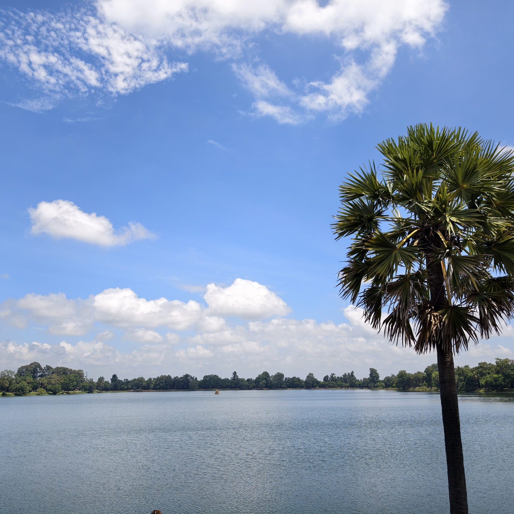
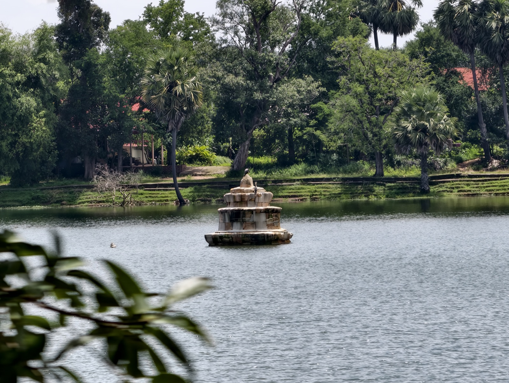

皇家浴池
皇家浴池其实不是浴池，而是一座水库——和东巴莱湖、西巴莱湖一样的人工湖。它十世纪就已存在，十二世纪末，阇耶跋摩七世命皇家建筑师改建：四周加了雕花的砂岩边框，西岸筑起一座朝东的十字形平台，以石狮和那伽栏杆装饰，其中金翅鸟展翼制伏三头那伽的造型最为精彩。改建后的水面东西约七百米，南北约三百五十米。
平台兼作皇室游湖的码头。湖中原有一座湖心寺，法国人清理吴哥遗迹时，铲除了盘踞寺身的大树，寺也随之坍塌，再无法复原。柬埔寨的僧侣有雨安居的传统，传说笃信佛教的阇耶跋摩七世，就曾在雨季躲进这座湖心寺里闭关。

